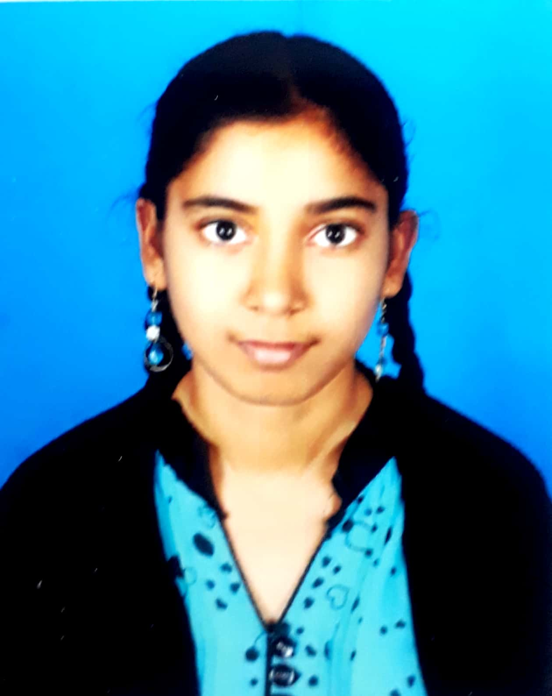

DUDEKULA NASREEN
H.No:8-17-127-53/2B,Nalla Banda Street
Giddalur,Prakasam District,Andhra Pradesh,523357
6300243226
nasreendudekula81@gmail.com
Nasreen-Dudekula/github.com

OBJECTIVE
Enthusiastic to work in your esteemed company as a software developer and to enrich my capabilities by being a part in your company.
SKILLS & ABILITIES
- TECHNICAL SKILLS :
- C programming Language
- Python Programming Language
- Java Programming Language
- HTML Progrmming Language
- SOFT SKILLS :
- Patience
- Work Ethic
- Time Management
- Commitment
EDUCATION
CHANIKYA HIGH SCHOOL,KURNOOL - ONGOLE MAIN ROAD,GIDDALUR
10th GPA : 9.3
Year : 2017
FUTURE FOCUS MAHILA JUNIOR COLLEGE,NALLAPADU,GUNTUR
12th GPA : 9.71
Year : 2017-19
LAKIREDDY BALI REDDY COLLEGE OF ENGINEERING
An autonomous college affiliated to JNTU Kakinada
Will complete my 3rd year August,2021
Year : 2019-2023
PERSONAL PROJECTS
- COUNSELOR'S DAIRY USING MIT APP INVENTOR
- NODEMCU USING FIREBASE
- PAPERLESS TICKETING USING FACE RECOGNITION FOR METRO RAIL USING PYTHON,OPEN CV,MYSQL